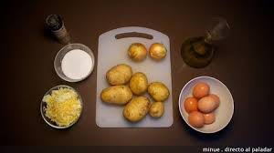

Tortilla de patatas
Ingredientes
8 huevos camperos o 10 huevos normales.
1 kg de patatas gallegas
Aceite de oliva virgen extra para la fritura de las patatas
1 cebolla grande (opcional)
Sal (al gusto)

Preparación
1.Pelamos las patatas, las lavamos para quitar restos de suciedad y muy importante, las secamos.
2.Cortamos en láminas semifinas, a mí no me gusta que se deshagan sino que al freírlas se tuesten un poco. Las colocamos en un bol grande, donde luego vamos a mezclar con el huevo y añadimos sal al gusto. Removemos bien y reservamos.
3.Elegimos nuestra sartén más grande y antiadherente. La ponemos al fuego y añadimos un buen aceite de oliva virgen extra.
4.No tengáis miedo en gastaros un poco de dinero en aceite, le va a dar ese punto de sabor que distingue vuestra tortilla de las demás, podéis emplear muchas variedades: arbequina, picual, cornicabra, hojiblanca, royal… el que más os guste, pero de calidad.
5.Introducimos las patatas cortadas y ya saladas y dejamos que se cocinen durante aproximadamente veinte minutos a fuego bajo.
6.El tema del grosor de las patatas también va a gustos. Hay quien prefiere cortarlas a trozos muy pequeños, en láminas muy finas que casi se rompan al freír y o más bien grandes.
7.Mientras se están friendo las patatas, en el bol donde luego vamos a echar las patatas batimos los huevos, reservamos.
8.Pelamos la cebolla y cortamos lo más fino posible.
9.En otra sartén calentamos aceite de oliva y añadimos los trozos de cebolla.
10.Pochamos hasta que tenga un color dorado, que tenga un punto de caramelización pero sin llegar a quemarse. La cebolla se hará antes que las patatas, así que escurrimos y añadimos al bol con el huevo batido.